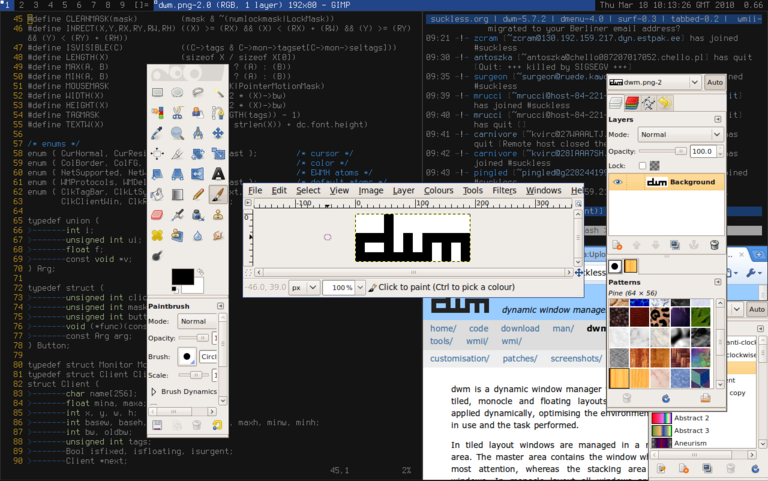

dwm
dwm is a dynamic window manager for the X window system.
Installation
- git clone https://git.suckless.org/dwm
- cd dwm
- make clean install
Usage
- The tutorial can be found here.
- dwm must be recompiled, reinstalled, and restarted after revisions for changes to take effect.
- Changes can be applied to dwm through patches.
Source code
dwm is in development. You can view its source code here.